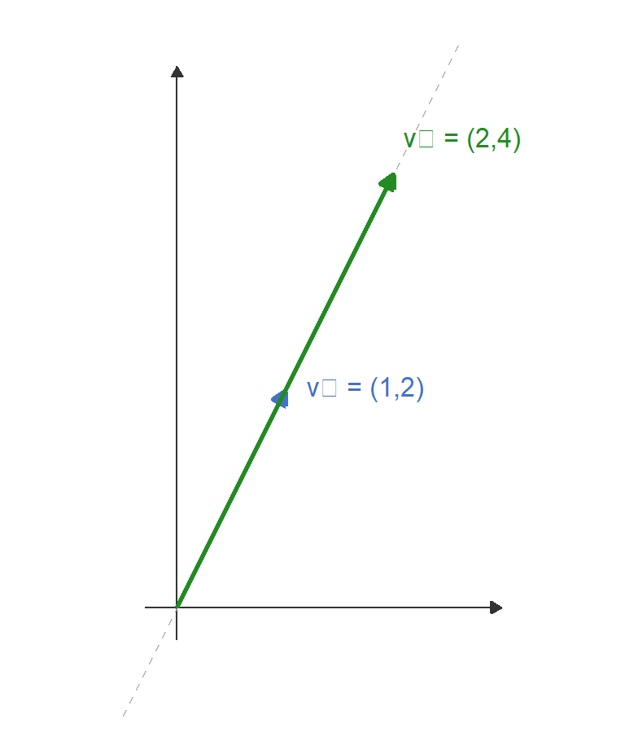
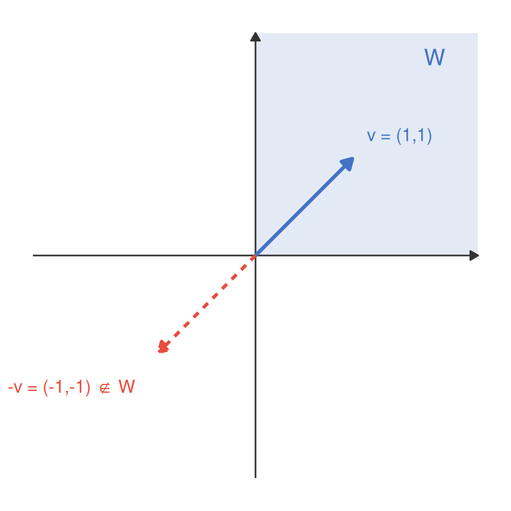
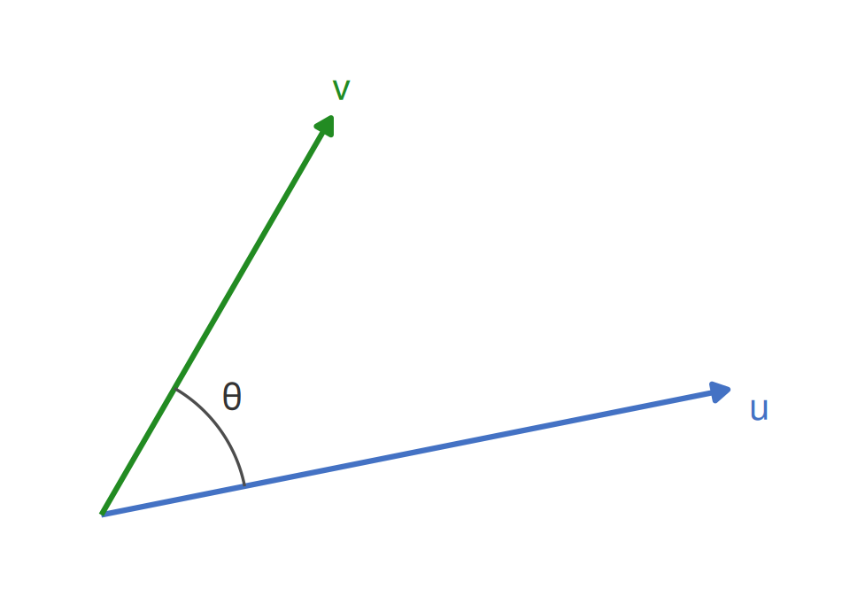
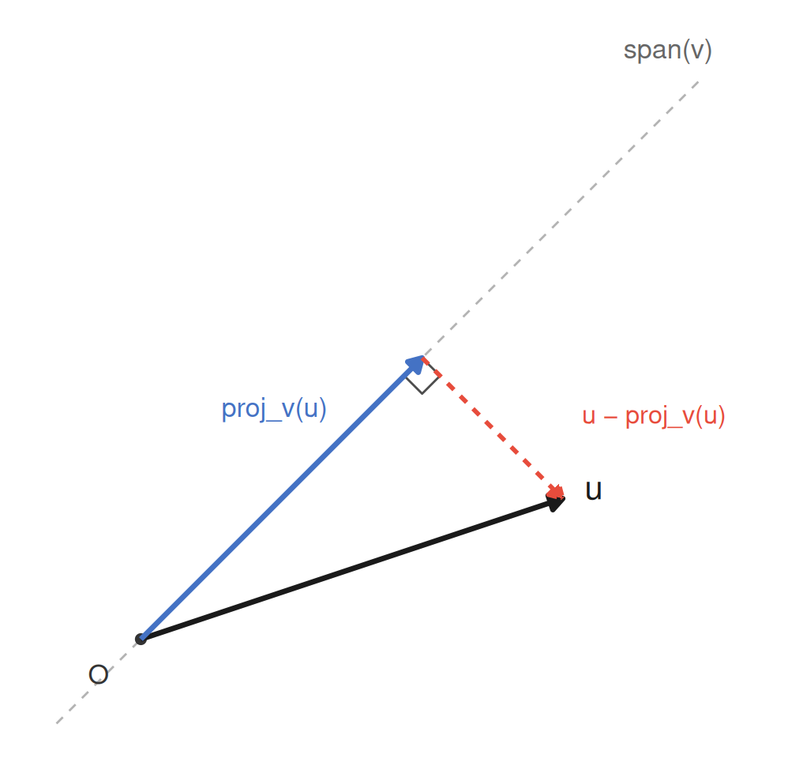
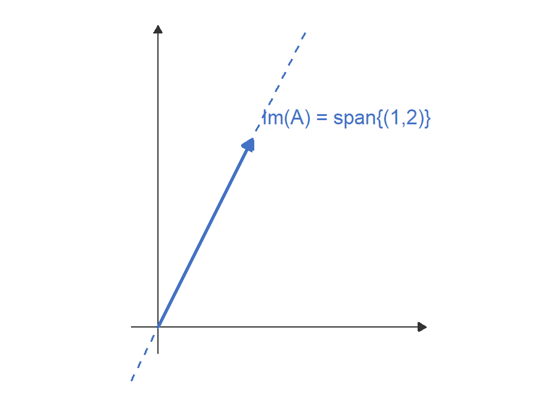
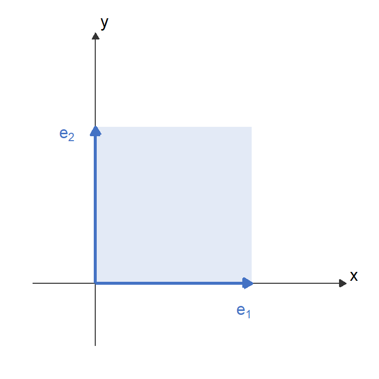
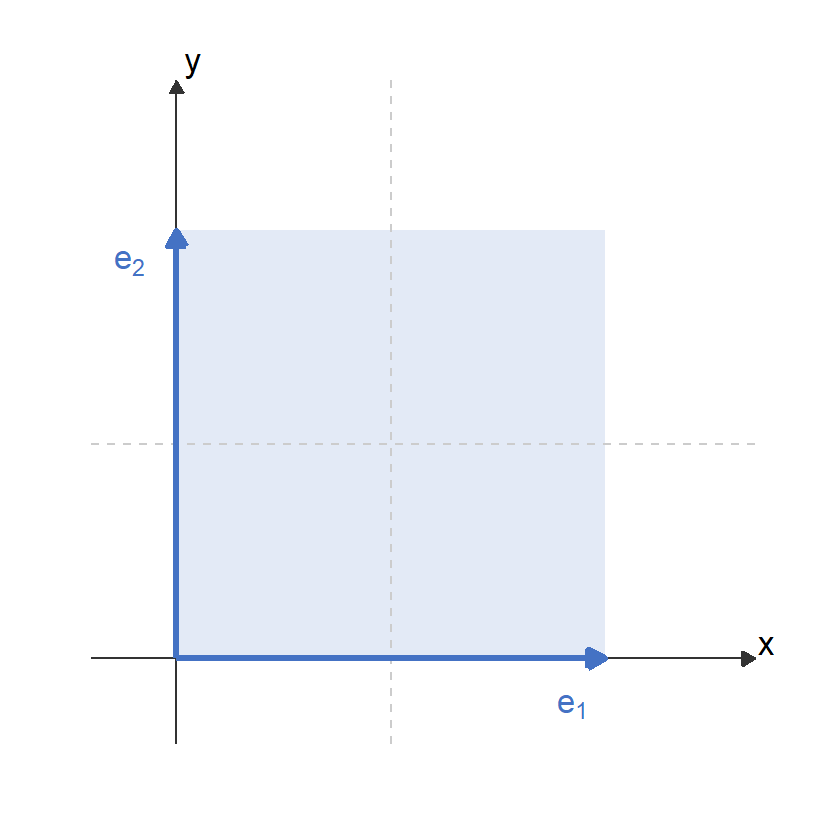
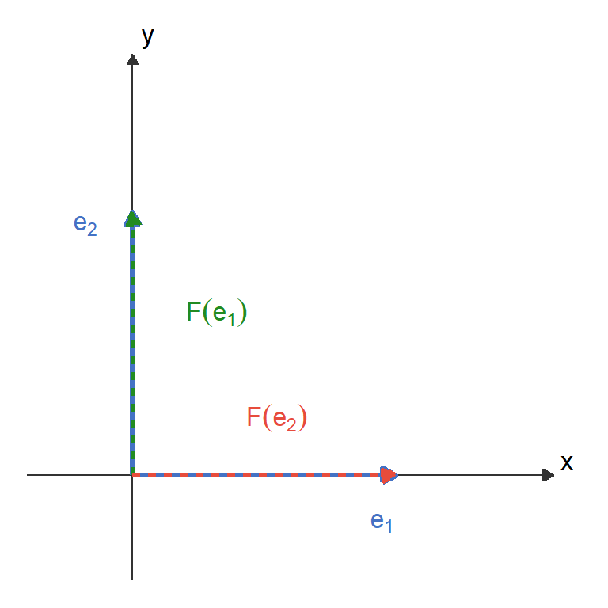
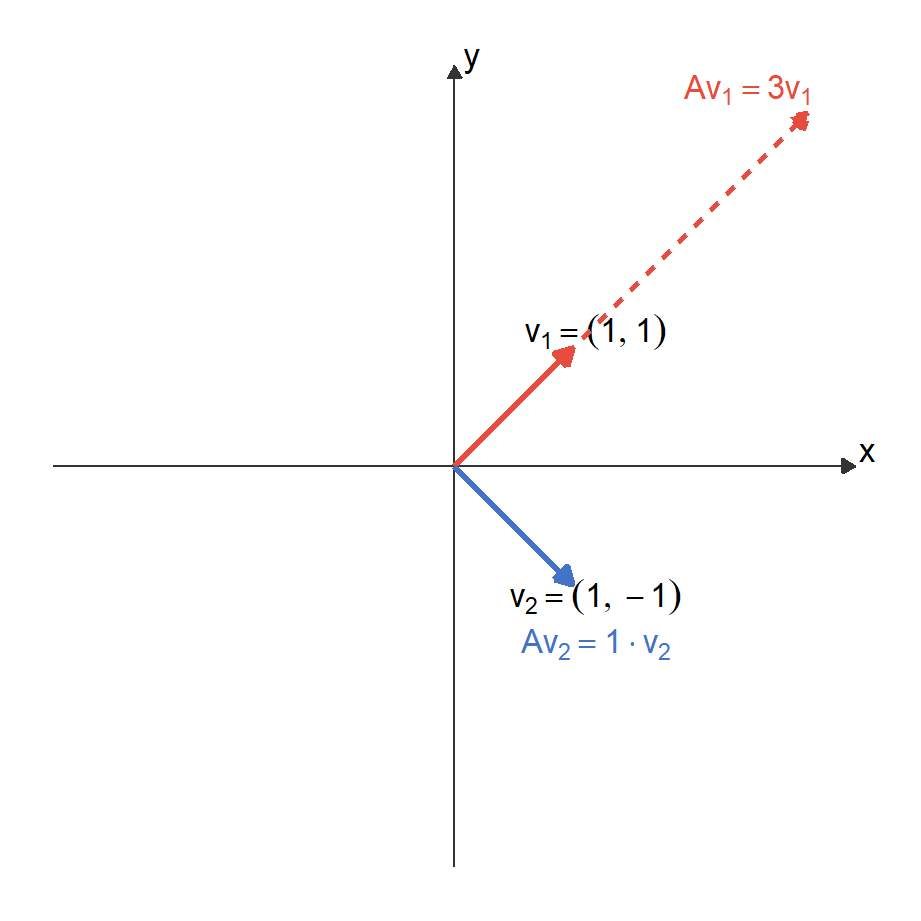
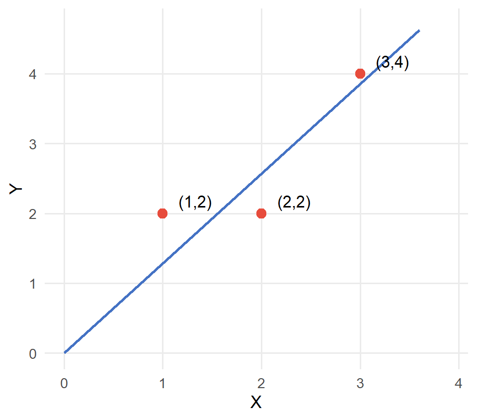

Math Camp
Session 2: Linear algebra
Alexandre Grellet
2026-07-31
Any idea about what we call linear algebra? (especially the linear part)
The interest of linear algebra
Algebra = study of structures where some operations (addition, multiplication) can be used.
Linear algebra deals with the study of structures such that: if elements \(x_1,\ldots,x_n \in A\), then \(\forall(\lambda_1,\ldots,\lambda_n)\in \mathbb{R}^n: \sum_i\lambda_ix_i\in A\) (i.e. linear combinations of elements in a set are also in the set).
It also provides us with the tools to solve more efficiently systems of linear equations \(\rightarrow\) this again motivates linearization.
The key message
Linear algebra is the language of multivariate statistics, macro, and theory. OLS, principal components, and stability analysis all reduce to matrix operations whose properties follow from linear algebra.
Objective for today: study the algebra that you will need to solve systems of linear equations.
Resources
All the materials we cover today is covered in more depth in:
Roadmap for session 2
- Vector spaces, span, basis, dimension, linear independence
- Orthogonality and projections
- Matrix notation and linear maps
- Rank–nullity
- Determinants
- Eigenvalues, eigenvectors, diagonalisation
- Positive definite matrices
- OLS as a projection
Part i: vector spaces, orthogonality, and projections
Vector spaces
Definition
A vector space over \(\mathbb{R}\) is a set \(V\) such that the following properties hold for any \(\mathbf{u}, \mathbf{v} \in V,\; c, d \in \mathbb{R}\):
- 1. Closure under addition: \(\mathbf{u} + \mathbf{v} \in V\)
- 2. Closure under scalar multiplication: \(c\mathbf{u} \in V\)
- 3. Commutativity: \(\mathbf{u} + \mathbf{v} = \mathbf{v} + \mathbf{u}\)
- 4. Associativity: \((\mathbf{u} + \mathbf{v}) + \mathbf{w} = \mathbf{u} + (\mathbf{v} + \mathbf{w})\)
- 5. Zero vector (identity): \(\mathbf{u} + \mathbf{0} = \mathbf{u}\)
- 6. Additive inverse: \(\mathbf{u} + (-\mathbf{u}) = \mathbf{0}\)
- 7. Distributivity (scalars): \((c + d)\mathbf{u} = c\mathbf{u} + d\mathbf{u}\)
- 8. Distributivity (vectors): \(c(\mathbf{u} + \mathbf{v}) = c\mathbf{u} + c\mathbf{v}\)
- 9. Compatibility: \(c(d\mathbf{u}) = (cd)\mathbf{u}\)
- 10. Scalar identity: \(1\mathbf{u} = \mathbf{u}\)
Examples
- \(\mathbb{R}^n\): the standard \(n\)-dimensional real vector space.
- \(C([a,b])\): continuous functions on \([a,b]\) (infinite-dimensional).
- \(\mathbb{M}_{m\times n}\): \(m\times n\) real matrices.
- \(\mathbb{P}_k\): polynomials of degree \(\le k\) (dimension \(k+1\)).
A non-example: when closure fails
Try it: \(W = \{(x,y)\in\mathbb{R}^2 : x\ge 0,\, y\ge 0\}\)
Take \(v=(1,1)\in W\) and the scalar \(c=-1\). Then
\[c\,v = (-1,-1) \notin W.\]
\(W\) is closed under addition (add two non-negative vectors, you stay non-negative), but it fails closure under scalar multiplication: one axiom is enough to sink the whole structure.

An economic reading
\(W\) is exactly a consumption set \(\{x\ge 0\}\). It’s a cone, not a vector space (one more reason “linear” is doing real work): budget constraints are linear (affine), but the set of feasible bundles generally isn’t closed under scalar multiplication at all.
Span, linear independence, and basis
Span
\[\operatorname{span}(v_1,\ldots,v_k) = \left\{\,\sum_{j=1}^k a_j\,v_j \;\Big|\; a_j\in\mathbb{R}\,\right\}.\]
The span is simply the set of all vectors you can reach using linear combinations of the \(v_j\).
Linear independence
\(\{v_1,\ldots,v_k\}\) are linearly independent iff
\[\sum_j a_j v_j = 0 \implies a_j = 0\;\forall j.\]
In practice: no vector in the family can be expressed as a linear combination of the others.
Basis and dimension
A basis of \(V\) is a linearly independent spanning set: \((v_1,\ldots,v_k)\) are linearly independent and \(\operatorname{span}(v_1,\ldots,v_k) = V\).
\(\dim V\) = number of vectors in any basis of \(V\).
Example: linear dependence in \(\mathbb{R}^2\)
Let \(v_1 = (1,2),\quad v_2 = (2,4)\). We ask: does there exist \(c_1, c_2 \neq 0\) such that \(c_1 v_1 + c_2 v_2 = (0,0)\)?
\[\begin{aligned} c_1 + 2c_2 &= 0,\\ 2c_1 + 4c_2 &= 0. \end{aligned}\]
The first equation gives \(c_1 = -2c_2\). Substituting into the second: \[2(-2c_2) + 4c_2 = -4c_2 + 4c_2 = 0,\] which holds for any \(c_2\). Taking \(c_2 = 1\), we get \(c_1 = -2\), so \[-2\,v_1 + 1\,v_2 = (0,0).\] Therefore \(\{v_1, v_2\}\) is linearly dependent: geometrically, both vectors point along the same line!
Example: linear independence in \(\mathbb{R}^3\)
\(\mathbb{R}^3\): Standard Basis
Take
\[v_1=(1,0,0),\;v_2=(0,1,0),\;v_3=(0,0,1),\quad A=I_3.\]
Then
\[c_1\,v_1 + c_2\,v_2 + c_3\,v_3 = 0 \;\Longleftrightarrow\; \begin{pmatrix}c_1\\c_2\\c_3\end{pmatrix} = 0 \;\Longleftrightarrow\; c_1=c_2=c_3=0,\]
so \(\{v_1,v_2,v_3\}\) is linearly independent. These three vectors form a basis for \(\mathbb{R}^3\), and \(\dim\mathbb{R}^3 = 3\).
Three mutually perpendicular directions, none reachable from the other two (the most standard basis there is).
Why do we care?
- A. Economists love complicated things.
- B. It’s random teaching to verify whether you are alive.
- C. It turns out to be crucial for techniques that establish relationships between outcomes and causes.
- D. Mathematical rigor provides important skills in life.
- E. You are clever students and deserve to know the math behind what you will study.
- F. The consumer’s budget set is always represented by a linear constraint.
Answer
In practice, mainly C (but also D and E).
Concretely: OLS, IV, PCA, dynamic stability analysis (all of these reduce to questions about column spaces, rank, and eigenvalues.
Dot product and orthogonality
The dot product of two vectors \(\mathbf{u}\) and \(\mathbf{v}\) of size \(n\) is a scalar:
\[\mathbf{u} \cdot \mathbf{v} = \sum_{i=1}^{n} u_i\,v_i = \mathbf{u}^T\mathbf{v} = \mathbf{v}^T\mathbf{u}.\]
Two vectors are orthogonal if and only if \(\mathbf{u} \cdot \mathbf{v} = 0\).
Why do you think we say these vectors are orthogonal?
Geometric interpretation:
\[\mathbf{u} \cdot \mathbf{v} = \|\mathbf{u}\|\;\|\mathbf{v}\|\;\cos\theta,\]
where \(\theta\) is the angle between them (the law of cosines). Hence
\[\mathbf{u} \cdot \mathbf{v} = 0 \;\Longrightarrow\; \cos\theta = 0 \;\Longrightarrow\; \theta = 90^\circ.\]

An economic implication
When we try to predict test scores with student characteristics, the prediction error \(\hat{\varepsilon}\) we make are orthogonal (unrelated) by construction with student characteristics \(X\): \(X^\top \hat{\varepsilon} = 0\). This geometric fact is the heart of the OLS normal equations.
Orthogonal projection onto a line
Given two vectors that are not orthogonal, how much of one actually points in the direction of the other? In other words, how can we approximate one vector with one other? We start with the simplest version: approximating with a single direction.
Imagine we have vectors \(u,v \in \mathbb{R}^n\), and we want to find the projection of \(u\) onto \(v\). In practice, this means we want to split \(u\) in 2 parts: a part living in the \(\text{span}(v)\) and one orthogonal to \(v\). Mathematically, how to find it?

Formula for the orthogonal projection
Definition
The orthogonal projection of \(u\) onto the line spanned by \(v \ne 0\) is
\[\operatorname{proj}_v(u) = \frac{u \cdot v}{v \cdot v}\,v.\]
Where does this formula actually come from?
Solve for it directly. \(\operatorname{proj}_v(u)\) has to sit somewhere on the line spanned by \(v\), so it’s some multiple of \(v\) (call it \(cv\)). The one property that pins down \(c\) is that the leftover piece must be perpendicular to \(v\):
\[(u-cv)\cdot v = 0 \;\;\Longrightarrow\;\; u\cdot v = c\,(v\cdot v) \;\;\Longrightarrow\;\; c = \frac{u\cdot v}{v\cdot v}.\]
Nothing to memorise: it’s just “which multiple of \(v\) makes the leftover piece orthogonal to \(v\)?”
Orthogonal projection onto a line: example
Worked example
Let \(u=(3,1)\) and \(v=(1,1)\). Then
\[\operatorname{proj}_v(u) = \frac{u\cdot v}{v\cdot v}\,v = \frac{3+1}{1+1}(1,1) = 2(1,1) = (2,2).\]
Residual: \(u - \operatorname{proj}_v(u) = (1,-1)\), and indeed \((1,-1)\cdot(1,1) = 1-1 = 0\). ✓
This is exactly the picture two slides back (same \(u\), same \(v\)), now with the algebra behind it.
Orthogonal projection onto a subspace
A line only lets you move in one direction. The plane \(S\) has two independent directions in it, you can’t eyeball the closest point anymore: you need algebra. Here is the example we will carry through the next two slides, all the way to a finished formula:
Running example
\[S = \operatorname{span}\{a_1,a_2\} \subset \mathbb{R}^3, \qquad a_1=(1,1,0),\;\; a_2=(0,1,1), \qquad u = (3,2,2).\]
\(u\notin S\): no combination \(c_1a_1+c_2a_2\) can reproduce all three coordinates of \(u\) at once (try it). So: what point in \(S\) is reachable, and closest to \(u\)?
The projection theorem
The projection theorem
For any subspace \(S\subseteq\mathbb{R}^n\) and any \(u\in\mathbb{R}^n\), there is a unique closest point \(\hat u\in S\):
\[\hat u = \operatorname{proj}_S(u) = \operatorname*{arg\,min}_{s\in S}\|u-s\|,\]
and it is completely pinned down by one property (the leftover piece is orthogonal to every vector in \(S\), not just to \(u\)):
\[u-\hat u \;\perp\; S \quad\Longleftrightarrow\quad (u-\hat u)^\top s = 0 \;\;\forall s\in S.\]
A simple demonstration about the “closest point” argument
For any other \(s\in S\): \(\;\|u-s\|^2 = \|u-\hat u\|^2 + \|\hat u - s\|^2 \ge \|u-\hat u\|^2\), because the two pieces are orthogonal. Moving away from \(\hat u\) inside \(S\) can only add distance, never remove it \(\rightarrow\) “closest” and “orthogonal residual” turn out to be the same condition in disguise.
Finding the projection by hand
Write the target as \(\hat u = c_1a_1+c_2a_2\) for unknown weights, stack the spanning vectors into \(A=[a_1\;\;a_2]\), and demand that the residual be orthogonal to both columns of \(A\) at once. (Note that if you are orthogonal to the basis \((a_1,a_2)\) of \(S\), you will be orthogonal to all vectors by construction)
\[A^\top(u-Ac)=0 \quad\Longleftrightarrow\quad \underbrace{A^\top A}_{\text{now a genuine }2\times2}\,c = A^\top u.\]
Plug in the numbers.
\[A = \begin{pmatrix}1&0\\1&1\\0&1\end{pmatrix}, \qquad A^\top A = \begin{pmatrix}2&1\\1&2\end{pmatrix}, \qquad A^\top u = \begin{pmatrix}5\\4\end{pmatrix}.\]
Unlike the line, \(A^\top A\) is not diagonal here: there’s a genuine \(2\times2\) matrix to invert (will study matrix inversion in a few slides but the idea is the same as with numbers, a matrix \(M^{-1}\) is the inverse of \(M\) if \(M^{-1}M = I\)):
\[c = (A^\top A)^{-1}A^\top u = \frac{1}{3}\begin{pmatrix}2&-1\\-1&2\end{pmatrix}\begin{pmatrix}5\\4\end{pmatrix} = \begin{pmatrix}2\\1\end{pmatrix} \;\;\Longrightarrow\;\; \hat u = 2a_1+1a_2 = (2,3,1), \quad u-\hat u = (1,-1,1).\]
The projection matrix p
The steps we just ran (solve \(A^\top A\,c=A^\top u\), then form \(Ac\)) never actually depended on which \(u\) we started with. Bundle them into a single matrix and they work for any \(u\) at once:
\[\hat u = A(A^\top A)^{-1}A^\top u = P_S u, \qquad P_S := A(A^\top A)^{-1}A^\top.\]
For our running example
\[P_S = \frac{1}{3}\begin{pmatrix}2&1&-1\\1&2&1\\-1&1&2\end{pmatrix}.\]
Symmetric by inspection. And \(\operatorname{tr}(P_S) = \tfrac{2+2+2}{3} = 2\) (exactly \(\dim(S)\). Keep that trace fact in your pocket; it resurfaces almost unchanged when we get to OLS.
\(A\) full column rank \(\Rightarrow\) \(A^\top A\) invertible (we’ll see exactly why once we reach positive definite matrices). Two properties of \(P_S\) hold for any subspace, not just ours:
- Idempotent: \(P_S^2=P_S\) (a point already in \(S\) gets sent to itself, so projecting twice changes nothing.
- Symmetric: \(P_S^\top=P_S\) (inherited directly from \(A^\top A\) being symmetric).
Does \(P_S\) change if you pick a different basis for the same subspace \(S\)?
No (and that’s the whole point)
Any two matrices whose columns span the same \(S\) produce the same \(P_S\). The projection depends only on the subspace, never on how you happened to write it down. Remember this formula: in a few slides, \(A\) becomes \(X\) and \(u\) becomes \(Y\): nothing new, just relabelled.
Part ii: linear maps, matrix notation, and rank–nullity
Linear maps and their matrix representation
Every linear map is a matrix
A map \(T:\mathbb{R}^n\to\mathbb{R}^m\) is linear iff \(T(ax+by)=aT(x)+bT(y)\). Any linear map has a matrix representation \(A\in\mathbb{M}_{m\times n}\): \(T(x)=Ax\).
A map is also sometimes called a function.
For instance, \(f(x,y) = \begin{pmatrix} 2x+y\\ x+2y \end{pmatrix}\) is a linear map represented by:
\[A = \begin{pmatrix} 2 & 1 \\ 1 & 2 \end{pmatrix}, \qquad A\begin{pmatrix}x\\y\end{pmatrix} = \begin{pmatrix}2x+y\\x+2y\end{pmatrix}.\]
Why this notation?
- Generalises scalar multiplication: in \(\mathbb{R}^n\to\mathbb{R}^m\), the generalisation is multiplication by a matrix.
- Keeps notation concise. Imagine having to write 68 linear equations with 60 variables…
Matrix notation: two ways to slice the same object
A matrix is just numbers in a grid. What changes everything is how you cut it up (and both cuts show up constantly for the rest of the course.
Reading by columns
\[A = \big[\,c_1(A)\;\; c_2(A)\;\; \cdots \;\; c_n(A)\,\big], \qquad c_j(A) \in \mathbb{R}^m.\]
Reading by rows
\[A = \begin{pmatrix} r_1(A)^\top \\ \vdots \\ r_m(A)^\top \end{pmatrix}, \qquad r_i(A) \in \mathbb{R}^n.\]
Matrix–vector multiplication has two equivalent readings:
\[Ax = \sum_{j=1}^n x_j\, c_j(A) \quad\text{(a weighted sum of columns)}, \qquad (Ax)_i = r_i(A)^\top x \quad\text{(row $i$ dotted with $x$)}.\]
This can be important: some professors like to fill matrices with row vectors, other with column vectors…
If \(X\) is \(N\times K\), what are the dimensions of \(c_k(X)\) and \(r_i(X)\)?
Matrix notations
Some researchers (especially in econometrics) also denote matrices as a collection of rows or columns.
For instance, imagine you observe \(K\) characteristics of \(N\) individuals denoted by vectors \(X_1, \ldots, X_N\). You may denote the matrix with all observations as:
\[X = \begin{pmatrix} X_1^\top \\ \vdots \\ \vdots \\ X_N^\top \end{pmatrix} = \begin{pmatrix} X_{11} & X_{12} & \cdots & X_{1K} \\ \vdots & \ddots & &\vdots \\ \vdots & & \ddots & \vdots \\ X_{N1} & X_{N2} & \cdots & X_{NK} \end{pmatrix}\]
The habit that saves you on problem sets
In econometrics, the design matrix \(X\) is \(N\times K\): rows are observations, columns are variables. So \(c_k(X) \in \mathbb{R}^N\) (variable \(k\) across the whole sample) and \(r_i(X) \in \mathbb{R}^K\) (individual \(i\)’s full characteristic vector). Mix the two up (write a row where you meant a column) and every dimension in your derivation silently breaks.
(Have this in mind during spring semester)
Matrix notation: a worked example
\[A = \begin{pmatrix} 1 & 4 \\ 2 & 5 \\ 3 & 6 \end{pmatrix} \qquad (3\times 2).\]
By columns: \(c_1(A) = (1,2,3)\), \(c_2(A) = (4,5,6)\) (each a vector in \(\mathbb{R}^3\)).
By rows: \(r_1(A) = (1,4)\), \(r_2(A) = (2,5)\), \(r_3(A) = (3,6)\) (each a vector in \(\mathbb{R}^2\)).
The two routes agree
For \(x = (1,1)\):
\[Ax = 1\cdot c_1(A) + 1\cdot c_2(A) = (5,7,9)\]
\[Ax = \bigl(r_1(A)^\top x,\; r_2(A)^\top x,\; r_3(A)^\top x\bigr) = (1{+}4,\,2{+}5,\,3{+}6) = (5,7,9).\]
Same matrix, same vector, same answer: two different ways of bookkeeping the exact same computation.
Block (partitioned) matrices
Sometimes it’s cleaner to chop a matrix into sub-blocks and manipulate the blocks as if they were single numbers.
Partitioning by columns
\[X = \big[\,X_1 \;\; X_2\,\big], \qquad X_1 \in \mathbb{M}_{N\times K_1},\;\; X_2 \in \mathbb{M}_{N\times K_2}.\]
\[X\beta = \big[X_1 \;\; X_2\big]\begin{pmatrix}\beta_1\\ \beta_2\end{pmatrix} = X_1\beta_1 + X_2\beta_2.\]
General \(2\times 2\) block multiplication
\[\begin{pmatrix}A & B \\ C & D\end{pmatrix}\begin{pmatrix}x\\y\end{pmatrix} = \begin{pmatrix}Ax + By \\ Cx + Dy\end{pmatrix},\]
as long as the blocks conform: treat each block exactly like a scalar entry.
Where this comes back today
Split your regressors into a control block \(X_1\) and a variable-of-interest block \(X_2\), and this is exactly the bookkeeping behind the Frisch–Waugh–Lovell theorem you will study in spring semester.
Example: block multiplication by hand
\[X_1 = \begin{pmatrix}1\\1\\1\end{pmatrix}, \qquad X_2 = \begin{pmatrix}1&0\\0&1\\1&1\end{pmatrix}, \qquad \beta_1 = 2,\qquad \beta_2 = \begin{pmatrix}3\\-1\end{pmatrix}.\]
\[X\beta = \big[X_1 \;\; X_2\big]\begin{pmatrix}\beta_1\\ \beta_2\end{pmatrix} = 2\begin{pmatrix}1\\1\\1\end{pmatrix} + \begin{pmatrix}1&0\\0&1\\1&1\end{pmatrix}\begin{pmatrix}3\\-1\end{pmatrix} = \begin{pmatrix}2\\2\\2\end{pmatrix} + \begin{pmatrix}3\\-1\\2\end{pmatrix} = \begin{pmatrix}5\\1\\4\end{pmatrix}.\]
Sanity check
You could also just build \(X = [X_1\;\;X_2]\) as one \(3\times 3\) matrix and multiply by the stacked \(\beta = (2,3,-1)^\top\) directly (block or no block), the answer is the same \((5,1,4)^\top\). Blocks are bookkeeping, not new mathematics.
Image (column space) and rank
Image and kernel of \(f:\mathbb{R}^n\to\mathbb{R}^m\)
- \(\mathrm{Im}(f) = \{f(x)\mid x\in\mathbb{R}^n\}\) (column space): all possible outputs.
- \(\ker(f) = \{x\in\mathbb{R}^n\mid f(x)=0\}\) (null space): inputs that map to zero.
- \(\mathrm{Rank}(f) = \dim(\mathrm{Im}(f))\) = number of linearly independent columns of \(A\).
Using the column decomposition from two slides ago, \(f(x) = Ax = \sum_{j=1}^n x_j\,c_j(A)\), so the image is exactly the span of the columns:
\[\mathrm{Im}(f) = \operatorname{span}\bigl(\{c_1(A),\ldots,c_n(A)\}\bigr).\]
Rank bounds:
- \(\operatorname{Rank}(A) \le n\) (can’t exceed number of columns).
- \(\operatorname{Rank}(A) \le m\) (each column lives in \(\mathbb{R}^m\)).
- Therefore: \(\operatorname{Rank}(A) \le \min\{m, n\}\).
- \(A\) has full rank iff \(\operatorname{Rank}(A) = \min\{m, n\}\).
Example: image, kernel, and rank of a specific matrix
\[A = \begin{pmatrix}1 & 2 & 3\\2 & 4 & 6\end{pmatrix}: \mathbb{R}^3 \to \mathbb{R}^2.\]
Every column is a multiple of \((1,2)\), so
\[\operatorname{Im}(A) = \operatorname{span}\{(1,2)\} \;\Longrightarrow\; \operatorname{Rank}(A) = 1.\]

For the kernel, solve \(Ax=0\): since row 2 is just twice row 1, the system reduces to the single equation \(x_1+2x_2+3x_3=0\) (one constraint, three unknowns, so two free parameters):
\[\ker(A) = \operatorname{span}\{(-2,1,0),\,(-3,0,1)\} \;\Longrightarrow\; \dim\ker(A) = 2.\]
Check rank–nullity
\[\operatorname{Rank}(A) + \dim\ker(A) = 1 + 2 = 3 = n. \checkmark\]
Rank–nullity theorem (sometimes called the fundamental theorem of linear algebra)
Theorem (rank–nullity)
For \(f:\mathbb{R}^n\to\mathbb{R}^m\):
\[\underbrace{\operatorname{Rank}(f)}_{\dim(\mathrm{Im}(f))} + \underbrace{\operatorname{Null}(f)}_{\dim(\ker(f))} = \underbrace{n}_{\dim(\operatorname{Domain}(f))}.\]
Intuition (from PlanetMath):
- “Every independent linear constraint takes away one degree of freedom.”
- “\(n\) is the number of unconstrained degrees of freedom.”
- “The nullity is the degrees of freedom remaining in the solution space.”
Degrees of freedom in ols
In OLS with \(N\) observations and \(K\) predictors, residuals \(\hat\varepsilon\) denote the prediction errors you are making. By construction, these errors are orthogonal to \(X\) (an OLS amounts to an orthogonal projection), thus \(\hat\varepsilon\) lies in \(\ker(X^\top)\). By rank–nullity:
\[\mathrm{rank}(X^\top) + \dim(\ker(X^\top)) = N \;\Rightarrow\; \dim(\ker(X^\top)) = N - K.\]
Later, in econometrics, you will see that the variance for the estimator \(\beta\) that tries to predict an outcome \(Y\) with characteristics \(X\) is: \[\hat\sigma^2 = \frac{\hat\varepsilon^\top\hat\varepsilon}{N-K}.\]
The reason why division is by \(N - K\), not \(N\) follows from rank-nullity theorem.
Part iii: solving systems and determinants
Systems of equations as matrices
Consider the system:
\[\begin{cases} a_{11}x_1 + a_{12}x_2 + \cdots + a_{1n}x_n = b_1,\\ \quad\vdots\\ a_{m1}x_1 + a_{m2}x_2 + \cdots + a_{mn}x_n = b_m. \end{cases}\]
Define the coefficient matrix \(A = [a_{ij}]_{m\times n}\), the variable vector \(\mathbf{x} = (x_1,\ldots,x_n)^\top\), and the constant vector \(\mathbf{b} = (b_1,\ldots,b_m)^\top\).
The system compacts to: \[A\mathbf{x} = \mathbf{b}.\]
Application: the leontief input–output model
Motivation: modern economies aren’t a simple chain from raw materials to consumers: industries also sell to each other. Steel producers need electricity to run their furnaces; electricity producers need steel for turbines and pylons. So: how much should each sector produce in total, if we want to satisfy a given level of final consumer demand once every sector’s own input needs are accounted for?
Wassily Leontief won a Nobel Prize for turning exactly this question into a linear algebra problem!
Setting up the model
For each sector \(i\), let:
- \(x_i\) = total output of sector \(i\) (everything it produces, in some common unit),
- \(d_i\) = final demand for sector \(i\)’s output (what households, government, or exporters actually consume: not what other industries buy as inputs),
- \(a_{ij}\) = technical coefficient: units of good \(i\) needed as an input to produce one unit of good \(j\)’s output.
Total output must cover both final demand and everything other sectors need from it as an input:
\[x_i = \underbrace{\sum_j a_{ij}\,x_j}_{\text{used up as input by all sectors}} \;+\; \underbrace{d_i}_{\text{final demand}} \qquad\Longleftrightarrow\qquad x = Ax + d.\]
Why this is not trivial
\(x\) appears on both sides of the equation. Sector 1’s required output depends on sector 2’s output (sector 2 needs steel), and sector 2’s required output depends on sector 1’s (sector 1 needs electricity): which depends on sector 2’s again, and so on. There is no sector you can solve first, and you cannot just “plug in and compute”: it’s a fixed point, not a formula. Exactly the kind of problem linear algebra is built to cut through.
Solving it
Move \(x\) to one side and factor:
\[x - Ax = d \;\;\Longleftrightarrow\;\; (I-A)x = d \;\;\Longleftrightarrow\;\; x = (I-A)^{-1}d,\]
provided \((I-A)\) is invertible. (For a “productive” economy: one that can generate positive final output at all, this holds automatically; you’ll be able to check it yourself once we cover determinants in a few slides.) The matrix \((I-A)^{-1}\) is called the Leontief inverse: it translates a vector of final-demand shocks directly into the total-output response, \(\Delta x = (I-A)^{-1}\Delta d\).
Leontief model: a numeric example
Two sectors: Steel (1) and Electricity (2). Producing one unit of steel requires \(0.2\) units of steel (machinery, inputs) and \(0.4\) units of electricity (to run the furnaces). Producing one unit of electricity requires \(0.3\) units of steel (turbines, pylons) and \(0.1\) units of electricity. Households want \(100\) units of steel and \(50\) units of electricity as final goods:
\[A = \begin{pmatrix}0.2 & 0.3\\0.4 & 0.1\end{pmatrix}, \qquad d = \begin{pmatrix}100\\50\end{pmatrix}.\]
Solve step by step
\[I - A = \begin{pmatrix}0.8 & -0.3\\-0.4 & 0.9\end{pmatrix}.\]
Using the same \(2\times2\) shortcut previewed in Part I (swap the diagonal, flip the off-diagonal signs, divide by \(ad-bc\)):
\[ad-bc = (0.8)(0.9) - (-0.3)(-0.4) = 0.72-0.12 = 0.6, \qquad (I-A)^{-1} = \frac{1}{0.6}\begin{pmatrix}0.9 & 0.3\\0.4 & 0.8\end{pmatrix}.\]
\[x = (I-A)^{-1}d = \frac{1}{0.6}\begin{pmatrix}0.9 & 0.3\\0.4 & 0.8\end{pmatrix}\begin{pmatrix}100\\50\end{pmatrix} = \frac{1}{0.6}\begin{pmatrix}105\\80\end{pmatrix} \approx \begin{pmatrix}175.0\\133.3\end{pmatrix}.\]
Sanity check: does this actually satisfy \(x = Ax+d\)?
\[(Ax)_1 = 0.2(175.0)+0.3(133.3) = 35.0+40.0=75.0, \qquad x_1-(Ax)_1 = 175.0-75.0=100=d_1. \;\checkmark\]
\[(Ax)_2 = 0.4(175.0)+0.1(133.3) = 70.0+13.3=83.3, \qquad x_2-(Ax)_2 = 133.3-83.3=50=d_2. \;\checkmark\]
Exactly \(100\) units of steel and \(50\) of electricity make it to final consumers: the rest was absorbed internally, as inputs to the two sectors themselves.
Reading the multiplier
Steel’s total output (\(175\)) is 75% larger than the final demand it faces (\(100\)), purely because of feedback: producing steel takes electricity, producing that electricity takes steel, and so on. The \((1,1)\) entry of \((I-A)^{-1}\), namely \(0.9/0.6=1.5\), tells you precisely this: one extra dollar of final demand for steel raises total steel output by $1.50. Input–output multipliers like this are exactly how statistical agencies estimate the economy-wide impact of a demand shock hitting a single industry.
Rank and solvability
The solution set \(\mathrm{Sol}(b,f) = \{x \mid f(x)=b,\; x \in \mathbb{R}^n\}\)
- is an affine subspace \(x^* + \ker(f)\) of \(\mathbb{R}^n\),
- with dimension equal to the nullity: \(\dim(\mathrm{Sol}(b,f)) = \dim(\ker(f))\).
Rank determines solution structure:
| Condition | Meaning | |
|---|---|---|
| At least one solution for all \(b\) | \(\operatorname{Rank}(f) = m\) | \(f\) is surjective |
| At most one solution for all \(b\) | \(\operatorname{Rank}(f) = n\) | \(f\) is injective |
| Exactly one solution for all \(b\) | \(\operatorname{Rank}(f) = m = n\) | \(f\) is bijective (invertible) |
Invertible function \(\Leftrightarrow\) Invertible associated matrix A \(\Rightarrow\) \(A\) is square (but the converse is false!)
Example: reading the rank table
Three small maps, three outcomes:
\[A_1 = \begin{pmatrix}1&0&0\\0&1&0\end{pmatrix}: \mathbb{R}^3\to\mathbb{R}^2, \qquad A_2 = \begin{pmatrix}1&0\\0&1\\1&1\end{pmatrix}: \mathbb{R}^2\to\mathbb{R}^3, \qquad A_3 = \begin{pmatrix}2&1\\1&2\end{pmatrix}: \mathbb{R}^2\to\mathbb{R}^2.\]
- \(\operatorname{Rank}(A_1) = 2 = m < n\): surjective, not injective (e.g. \((0,0,1) \in \ker(A_1)\)).
- \(\operatorname{Rank}(A_2) = 2 = n < m\): injective, not surjective (its image is only a 2-dimensional plane sitting inside \(\mathbb{R}^3\)).
- \(\operatorname{Rank}(A_3) = 2 = m = n\) (our matrix from before!): bijective (for every \(b\in\mathbb{R}^2\) there is exactly one \(x\) with \(A_3x=b\)).
Rule of thumb
“Wide” matrices (\(n>m\)) can be surjective but never injective: too many inputs collapse onto too few outputs. “Tall” matrices (\(m>n\)) can be injective but never surjective: not enough inputs to reach everywhere. Only square, full-rank matrices can be bijective.
Determinant: definition and properties
Definition (informal and hard)
The determinant is the unique map \(\det:\mathbb{M}_{n\times n}\to\mathbb{R}\) that is multilinear in rows, changes sign under row swaps, and satisfies \(\det I = 1\).
Key properties
- \(\det(AB) = \det A \cdot \det B\).
- \(\det(A^\top) = \det A\).
- For triangular matrices: \(\det A = \prod_{i=1}^n a_{ii}\).
- \(\det(cA) = c^n \det A\) for an \(n\times n\) matrix.
The central equivalence
\[\det A \ne 0 \;\iff\; \operatorname{Rank}(A) = n \;\iff\; A \text{ is invertible} \;\iff\; Ax = b \text{ has a unique solution for all } b.\]
Geometric definition of the determinant (i)
\(|\det A|\) = volume scaling factor of the linear map \(A\).
\[A = \begin{pmatrix} 1 & 0 \\ 0 & 1 \end{pmatrix}, \qquad \det(A) = 1.\]

The identity map sends the unit square to itself. The area of a \(1\times 1\) square is \(1 = \det(A)\).
The determinant measures how much the map stretches space.
Geometric interpretation of the determinant (ii)
\[B = \begin{pmatrix} 2 & 0 \\ 0 & 2 \end{pmatrix}, \qquad \det(B) = 4.\]

\(B\) doubles every vector: the unit square becomes a \(2\times2\) square.
Area \(= 4 = \det(B)\).
Scaling by \(c\) in each direction multiplies area by \(c^2\) \(\rightarrow\) \(\det(cI_2) = c^2\).
Geometric interpretation of the determinant (iii): orientation
Flipping. \(F = \begin{pmatrix} 0 & 1\\ 1 & 0 \end{pmatrix}\) swaps \(x\) and \(y\).

The map preserves area (still a \(1\times1\) square) but reverses orientation (like flipping a transparency sheet).
\[\det(F) = -1.\]
The sign of the determinant encodes orientation, not invertibility. \(F\) is perfectly invertible!
Geometric interpretation of the determinant (iv): squishing
Singular map. \(H = \begin{pmatrix} 0.5 & 0.5\\ -0.5 & -0.5 \end{pmatrix}.\)

Both basis vectors map to the same point: the whole plane is squashed onto a line.
\[\det(H) = (0.5)(-0.5) - (0.5)(-0.5) = 0.\]
A line has no area: the volume scaling factor is zero.
Not full rank \(\Leftrightarrow\) determinant is zero \(\Leftrightarrow\) not invertible.
Clicker: what does the sign of \(\det A\) tell us?
A \(3\times 3\) matrix \(A\) has \(\det(A) = -8\). Which statement is TRUE?
- A. \(A\) is not invertible because the determinant is negative.
- B. \(A\) is invertible; the map scales volumes by \(8\) and reverses orientation.
- C. \(\det(A^\top) = +8\) (transposing flips the sign).
- D. \(\det(2A) = -16\).
Answer: b
\(\det A \ne 0 \Rightarrow A\) invertible. The sign encodes orientation reversal (a mirror-image effect), not invertibility.
Common mistakes:
- C is wrong: \(\det(A^\top) = \det A = -8\) (transpose preserves determinant).
- D is wrong: \(\det(2A) = 2^3 \det A = 8 \cdot (-8) = -64\).
Invertibility and determinant: full summary
The \(n\times n\) square matrix \(A\) is
invertible (nonsingular) if and only if:
- it has full rank,
- all columns (rows) are linearly independent,
- \(\det(A) \ne 0 \;\Longleftrightarrow\; \operatorname{Rank}(A)=n \;\Longleftrightarrow\; \exists A^{-1}.\)
not invertible (singular) if and only if:
- it is rank-deficient,
- some columns (rows) are linearly dependent,
- \(\det(A) = 0 \;\Longleftrightarrow\; \operatorname{Rank}(A) < n \;\Longleftrightarrow\; \nexists A^{-1}.\)
Bottomline for solving systems
Solving \(A\mathbf{x} = \mathbf{b}\) with a unique solution is equivalent to \(A\) being invertible. When \(A\) is invertible: \(\mathbf{x}^* = A^{-1}\mathbf{b}\).
Part iv: eigenvalues and diagonalisation
Motivation and applications
Disclaimer
You will not use eigenvalues and eigenvectors heavily in the fall term (only a bit in macro). However, they are essential if you want to understand machine learning or dig into advanced econometrics.
Key use cases in economics:
- Dynamic systems stability (e.g., Solow model, Blanchard–Kahn conditions)
- Principal component analysis (PCA) for dimensionality reduction
- Markov chains and long-run stationary distributions
- Leontief input–output multipliers
Eigenvalues and eigenvectors: definitions
Eigenvector
A nonzero vector \(v\) such that \(Av = \lambda v\) is an eigenvector of \(A\). It is a vector whose direction is unchanged after applying \(A\): only its length (and possibly sign) changes.
Eigenvalue
The scalar \(\lambda\) satisfying \(Av = \lambda v\) is the corresponding eigenvalue.
Key Theorem
The eigenvalues of \(A\) are the roots of the characteristic polynomial:
\[\det(A - \lambda I) = 0.\]
For each eigenvalue \(\lambda\), the eigenvectors are the nonzero solutions to: \[(A - \lambda I)v = 0.\]
Geometric interpretation of eigenvectors
\[A = \begin{pmatrix}2 & 1\\1 & 2\end{pmatrix}: \quad f\bigl([x,y]^\top\bigr) = \begin{pmatrix}2x+y\\x+2y\end{pmatrix}.\]
Eigenvectors satisfy \(f(v) = \lambda v\): direction preserved, only scaled.

\(v_1\) is scaled by \(3\) (stretched); \(v_2\) is unchanged (\(\lambda_2 = 1\)). Both keep their direction.
Computing eigenvalues and eigenvectors
Step 1: Form \(A - \lambda I\). Step 2: Solve \(\det(A - \lambda I) = 0\). Step 3: Find \(v\) for each \(\lambda\).
Example with \(A = \begin{pmatrix}2 & 1 \\ 1 & 2\end{pmatrix}\):
\[\det(A - \lambda I) = \det\begin{pmatrix}2-\lambda & 1\\1 & 2-\lambda\end{pmatrix} = (2-\lambda)^2 - 1 = \lambda^2 - 4\lambda + 3 = (\lambda-3)(\lambda-1) = 0.\]
Eigenvalues: \(\lambda_1 = 3\), \(\lambda_2 = 1\).
For \(\lambda_1 = 3\): \((A - 3I)v = \begin{pmatrix}-1&1\\1&-1\end{pmatrix}v = 0 \Rightarrow v_1 = (1,1)^\top\).
For \(\lambda_2 = 1\): \((A - I)v = \begin{pmatrix}1&1\\1&1\end{pmatrix}v = 0 \Rightarrow v_2 = (1,-1)^\top\).
Diagonalisation
Definition
\(A\) is diagonalizable if there exists an invertible \(P\) such that: \[P^{-1}AP = D = \operatorname{diag}(\lambda_1,\ldots,\lambda_n).\]
Theorem
\(A\) is diagonalizable iff \(A\) has \(n\) linearly independent eigenvectors. The eigenvectors are the columns of \(P\); eigenvalues are the diagonal entries of \(D\).
Why does this matter?
\[A^k = P\,\operatorname{diag}(\lambda_1^k,\ldots,\lambda_n^k)\,P^{-1}.\]
Computing \(A^{100}\) becomes trivial: just raise each eigenvalue to the 100th power. This is the key to solving dynamic systems: \(x_t = A^t x_0\).
Determinant via eigenvalues
\[\det(A) = \prod_{i=1}^n \lambda_i, \qquad \operatorname{tr}(A) = \sum_{i=1}^n \lambda_i.\]
\(A\) is invertible iff all eigenvalues are nonzero.
Example: diagonalising our running matrix
Recall \(A=\begin{pmatrix}2&1\\1&2\end{pmatrix}\) with \(\lambda_1=3,\,v_1=(1,1)\) and \(\lambda_2=1,\,v_2=(1,-1)\).
\[P = \begin{pmatrix}1&1\\1&-1\end{pmatrix}, \qquad D = \begin{pmatrix}3&0\\0&1\end{pmatrix}, \qquad P^{-1} = \frac{1}{2}\begin{pmatrix}1&1\\1&-1\end{pmatrix}.\]
You can check \(P^{-1}AP=D\) by direct multiplication (a good five-minute hand exercise).
The payoff: compute \(A^2\) two ways.
\[A^2 = \begin{pmatrix}2&1\\1&2\end{pmatrix}^2 = \begin{pmatrix}5&4\\4&5\end{pmatrix} \qquad\text{(direct multiplication)}\]
\[A^2 = PD^2P^{-1} = \frac{1}{2}\begin{pmatrix}1&1\\1&-1\end{pmatrix}\begin{pmatrix}9&0\\0&1\end{pmatrix}\begin{pmatrix}1&1\\1&-1\end{pmatrix} = \begin{pmatrix}5&4\\4&5\end{pmatrix}. \checkmark\]
Same idea, 100 steps later
Both routes take similar effort for \(A^2\). But \(A^{100}\) directly means 99 matrix multiplications; via \(PD^{100}P^{-1}\) it’s three matrix multiplications and raising two numbers to the 100th power.
Part v: positive definite matrices
Positive definite matrices
Definition
A symmetric matrix \(Q \in \mathbb{M}_{n\times n}\) is:
- Positive definite (PD): \(x^\top Qx > 0\) for all \(x \ne 0\).
- Positive semidefinite (PSD): \(x^\top Qx \ge 0\) for all \(x\).
- Negative definite (ND): \(x^\top Qx < 0\) for all \(x \ne 0\).
- Negative semidefinite (NSD): \(x^\top Qx \le 0\) for all \(x\).
\(Q\) is PD iff all eigenvalues are strictly positive. \(Q\) is PSD iff all eigenvalues are non-negative.
\(X^\top X\) is always psd
For any vector \(v\): \(\;v^\top X^\top X v = \|Xv\|^2 \ge 0\).
It is PD (hence invertible) iff \(\ker(X) = \{0\}\), i.e. columns of \(X\) are linearly independent. This is exactly the full rank condition required for OLS to have a unique solution.
Example: testing definiteness by hand
\[Q_1 = \begin{pmatrix}2&0\\0&3\end{pmatrix}, \qquad Q_2 = \begin{pmatrix}1&2\\2&1\end{pmatrix}.\]
For \(Q_1\): \(x^\top Q_1 x = 2x_1^2+3x_2^2 > 0\) for any \(x\ne 0\): clearly positive definite (a diagonal matrix with positive entries is the easy case).
For \(Q_2\), try two test vectors: \(x=(1,0) \Rightarrow x^\top Q_2 x = 1 > 0\), but \(x=(1,-1) \Rightarrow x^\top Q_2 x = -2 < 0\). The sign flips: \(Q_2\) is indefinite.
The problem with testing vectors one at a time
Plugging in vectors can rule a matrix out the moment you find two with opposite signs, but it can never fully confirm PD: there are infinitely many directions to check. We need a finite, mechanical test: Sylvester’s criterion, next.
Sylvester’s criterion
Theorem (sylvester’s criterion)
Let \(Q \in \mathbb{M}_{n\times n}\) be symmetric. Let \(\Delta_k = \det(Q_{1:k,\,1:k})\) be the \(k\)-th leading principal minor.
- \(Q\) positive definite \(\iff\) \(\Delta_k > 0\) for all \(k = 1,\ldots,n\).
- \(Q\) negative definite \(\iff\) \(\operatorname{sign}(\Delta_k) = (-1)^k\) for all \(k\).
Worked example
\[Q = \begin{pmatrix}2&1&0\\1&2&1\\0&1&2\end{pmatrix} \quad\Longrightarrow\quad \Delta_1 = 2,\quad \Delta_2 = \det\begin{pmatrix}2&1\\1&2\end{pmatrix}=3,\quad \Delta_3=\det(Q)=4.\]
All three positive \(\Rightarrow\) \(Q\) is positive definite (no eigenvalues needed, no test vectors, just three small determinants.
Why this matters
Sylvester gives a fast way to check PD/ND for small matrices: compute a few determinants rather than finding all eigenvalues.
You will use this constantly in second-order conditions for constrained optimisation.
Connection to optimisation
At a critical point \(\nabla f(x^*) = 0\): \[f(x^* + \Delta x) - f(x^*) \approx \tfrac{1}{2}(\Delta x)^\top H_f(x^*)\Delta x.\]
- \(H_f(x^*)\) negative definite \(\Rightarrow\) strict local maximum.
- \(H_f(x^*)\) positive definite \(\Rightarrow\) strict local minimum.
- \(H_f(x^*)\) indefinite \(\Rightarrow\) saddle point.
Exercise: negative definiteness
A symmetric \(3\times 3\) matrix \(Q\) has leading principal minors \(\Delta_1 = -2\), \(\Delta_2 = 3\), \(\Delta_3 = -5\). What can you conclude?
- A. \(Q\) is positive definite.
- B. \(Q\) is negative definite.
- C. \(Q\) is indefinite (neither PD nor ND).
- D. \(Q\) is positive semidefinite.
Answer: b (negative definite)
By Sylvester’s criterion: \(Q\) ND \(\iff\) signs alternate as \((-1)^1, (-1)^2, (-1)^3\), i.e. \(-, +, -\).
Here \(\Delta_1 = -2 < 0\), \(\Delta_2 = 3 > 0\), \(\Delta_3 = -5 < 0\). ✓
All eigenvalues of \(Q\) are strictly negative: the quadratic form \(x^\top Qx < 0\) for all \(x \ne 0\).
Part vi: OLS as a projection
OLS as a projection
Imagine you want to decompose a quantity \(Y \in \mathbb{R}^N\) into two parts: one part explained by the matrix
\(X \in \mathbb{M}_{N\times K}\) having full column rank and another part orthogonal to \(X\).
What is the tool we studied that allows to answer this question?
The projection matrix!
Derivation
Since \(X\) has full column rank, \(X^\top X\) is PD (hence invertible) and we can find some vector \(\hat\beta \in \mathbb{R}^K\) \[\hat\beta = (X^\top X)^{-1} X^\top Y.\] such that \(Y = X\beta + \epsilon = \underbrace{X(X^\top X)^{-1} X^\top}_{P_X} Y + \epsilon\)
with \(\epsilon\) being the orthogonal part to \(X\)
Geometric interpretation
\(\hat Y = X\hat\beta = X(X^\top X)^{-1}X^\top Y = P_X Y\) is the orthogonal projection of \(Y\) onto \(\operatorname{col}(X)\).
Residuals \(\hat\varepsilon = (I - P_X)Y\) are perpendicular to all regressors: \(X^\top \hat\varepsilon = 0\).
During your econometrics journey, you will discover conditions under which \(\beta\) gives you the causal effect of \(X\) on \(Y\).
The projection matrix \(P_X\)
Definition and properties
\[P_X = X(X^\top X)^{-1}X^\top, \qquad M_X = I - P_X \quad \text{(annihilator)}.\]
| Property | \(P_X\) | \(M_X\) |
|---|---|---|
| Symmetric | \(P_X^\top = P_X\) | \(M_X^\top = M_X\) |
| Idempotent | \(P_X^2 = P_X\) | \(M_X^2 = M_X\) |
| Rank | \(K\) | \(N-K\) |
| Eigenvalues | \(0\) and \(1\) only | \(0\) and \(1\) only |
Same object, new letters
This is exactly the general projection matrix \(P_S = A(A^\top A)^{-1}A^\top\) from Part I, with \(A = X\) and \(S = \operatorname{col}(X)\). Nothing new to memorise here: just relabelled.
Trace and degrees of freedom
\[\operatorname{tr}(P_X) = K, \qquad \operatorname{tr}(M_X) = N-K.\]
The trace of an idempotent matrix equals its rank. The \(N - K\) comes directly from rank–nullity (connecting back to Part I).
Example: ols by hand with three data points
Let \(X=(1,2,3)^\top\) (a single regressor, no intercept) and \(Y=(2,2,4)^\top\).
\[\hat\beta = \frac{X^\top Y}{X^\top X} = \frac{1\cdot 2+2\cdot 2+3\cdot 4}{1^2+2^2+3^2} = \frac{18}{14} = \frac{9}{7} \approx 1.29.\]
\[\hat Y = X\hat\beta = \Big(\tfrac{9}{7},\tfrac{18}{7},\tfrac{27}{7}\Big), \qquad \hat\varepsilon = Y-\hat Y = \Big(\tfrac{5}{7},-\tfrac{4}{7},\tfrac{1}{7}\Big).\]

Orthogonality check: \(X^\top\hat\varepsilon = 1\cdot\tfrac{5}{7} + 2\cdot(-\tfrac{4}{7}) + 3\cdot\tfrac{1}{7} = \tfrac{5-8+3}{7} = 0.\) ✓
What \(P_X\) looks like here
\[P_X = X(X^\top X)^{-1}X^\top = \frac{1}{14}\begin{pmatrix}1&2&3\\2&4&6\\3&6&9\end{pmatrix}, \qquad \operatorname{tr}(P_X) = \frac{1+4+9}{14} = 1 = K,\]
exactly \(K=1\) regressor, exactly as the table on the previous slide promised.
Wrap-up
Session 2: key takeaways
Foundations
- Vector spaces: basis, dimension, span are the vocabulary of multivariate statistics.
- Projections: every projection matrix, from a line to \(P_X\), is \(A(A^\top A)^{-1}A^\top\).
- Rank–Nullity: explains degrees of freedom in OLS and the geometry of column spaces.
- Determinants: encode invertibility; \(|\det A|\) measures volume scaling; sign encodes orientation.
Tools
- Eigenvalues: control stability of dynamic systems; spectral criterion for PD matrices.
- PD matrices: \(X^\top X\) PD \(\iff\) unique OLS solution; Hessian PD \(\iff\) strict local minimum.
- OLS = projection: \(\hat\beta\) projects \(Y\) onto \(\operatorname{col}(X)\); residuals are orthogonal to all regressors.
Looking ahead
Session 3 introduces integration and its connection to probability. The OLS geometry you built today will return when we discuss the spectral theorem and constrained optimisation in later sessions.
Resources
General resources
- 3Blue1Brown: Essence of Linear Algebra (YouTube, highly recommended visual introduction)
- Simon & Blume, Chapters 10–17
- Gilbert Strang, Introduction to Linear Algebra (MIT OpenCourseWare, free)
For the tutorial session
Exercises will cover:
- Checking linear independence and finding a basis.
- Computing determinants and verifying invertibility.
- Finding eigenvalues and classifying stability of a 2D system.
- Verifying Sylvester’s criterion on a \(3\times 3\) Hessian.
- Deriving \(\hat\beta\) and verifying \(X^\top\hat\varepsilon = 0\).
- Applying FWL: manually partial out a control and verify coefficient equality.
Appendix
Gaussian elimination
How to reduce \(A\) to row echelon form \(A'\):
For \(i = 1\) to \(n\):
- If \(a_{ii} = 0\):
- If all entries in column \(i\) below \(a_{ii}\) are zero, advance to \(i+1\).
- Otherwise: swap row \(i\) with the first row \(i'\) that has a nonzero \(a_{i'i}\); multiply the new row \(i\) by \(-1\) to preserve the determinant.
- If \(a_{ii} \ne 0\):
- Pivot on all rows \(i' > i\): add \(-\tfrac{a_{i'i}}{a_{ii}}\) times row \(i\) to row \(i'\), making all entries below \(a_{ii}\) equal to zero.
- If \(a_{ii} = 0\):
Row echelon form and solutions
The row echelon form tells us:
- Consistent (at least one solution): rank of augmented matrix \(=\) rank of \(A\).
- Exactly one solution: rank of \(A = n\); every row of \(A'\) has at least one nonzero entry; kernel dimension is zero.
- Infinitely many solutions: rank of \(A < n\); at least one row of \(A'\) is all-zero; kernel dimension \(> 0\).
Recursive computation of the determinant
For each entry \(a_{ij}\) of \(A\), define the minor \(M_{ij} = \det(A^{-(i,j)})\), where \(A^{-(i,j)}\) is \(A\) with row \(i\) and column \(j\) removed.
Define the cofactor \(C_{ij} = (-1)^{i+j} M_{ij}\).
Laplace’s expansion along row \(i\):
\[\det(A) = \sum_{j=1}^n a_{ij}\,C_{ij} = \sum_{j=1}^n a_{ij}\,(-1)^{i+j}\,\det(A^{-(i,j)}).\]
Warning
Laplace’s formula requires \(\sim n!\) operations: impractical for large \(n\). Prefer LU decomposition in practice.
Strang, Gilbert. 2005. “MIT 18.06 Linear Algebra, Spring 2005.” YouTube Playlist. MIT OpenCourseWare. https://www.youtube.com/playlist?list=PLE7DDD91010BC51F8.
Strang, Gilbert. 2023. Introduction to Linear Algebra. 6th ed. Wellesley-Cambridge press.